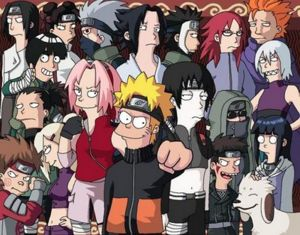

Narutard
 De: La Frikipedia, la enciclopedia extremadamente seria.
De: La Frikipedia, la enciclopedia extremadamente seria.
| De la serie tribus urbanas del mundo:
|
| Narutard
|
Ejemplo de la tribu

|
| Ejemplo de la tribu
|
|
| Hábitat
|
Igual que los otakus (pero ellos estan aparte)
|
| Inteligencia
|
Nada aparte de lo relacionado a Naruto
|
| Frase favorita
|
Dattebayo
|
| ¿Peligroso?
|
Si
|
| Obsesión
|
Naruto ¿obvio no?
|
| Notas
|
Di no al de veras
|
«¡¡¡DATTEBAYO!!!»
~ Narutard cualquiera
«¿Qué ocurre cuando la afición por algo te ciega de tal manera que pierdes el sentido del ridículo?»
~ Forero anónimo declarando que los narutards son ridículos
«¿Acaso un fan de Dragon Ball es un Gokuhtard? ¿Y de Akira, un Akirard? ¡Si parece que le estén pisando a alguien!»
~ Cualquiera que no entendió lo que es un narutard
Narutard es el acrónimo de la frase en ingles Naruto is a retard (Naruto es un retardado). Forma de llamar al friki individuo fan de la popular de Naruto, serie creada por Masashi me subo en tu moto. También es la forma de llamar al fandom (desmadre que hacen los otakus ya sea fanfics doujins etc.) creado por ellos.
Lo que empezó como una sola frikada terminó convirtiéndose en una secta pronto convertida en iglesia.
Carácteristica de un narutard

Cosplayer de Sakura (esta si es identica a la real)
Si es que no se puede mezclar Naruto y Death Note, porque luego pasa lo que pasa...

Más claro no pueden ser...
El narutard es la clase de otaku más criticada incluso por sus propios congéneres. Es considerada la clase de otaku más friki que ha existido. Debido a que ellos llegan al grado más alto de frikismo solo igualados por los haruistas.
- La bandana de la hoja: es igual al bautismo entre los católicos pero más parecido a la circuncisión entre los judíos. Llevan su bandana de la hoja a todos lados sin importar el sitio. Es una forma de identificarse con los otros narutards. De no tenerla no puede ser aceptado en la comunidad narutard. (es válido una bandana de la arena o del sonido) Los que llevan una bandana de Akatsuki (que pal caso es la misma chingadera solo que rayada a la mitad) son considerados como profetas o líderes de la comunida narutard.
- El dattebayo: es la palabra más usada por los narutard a pesar de ni siquiera saben qué significa. Los narutard saben muy bien que el dattebayo no significa De veras o Vaya que sí y tienen absolutamente prohibido decir esa palabras ya que de usarlas
se les cortara la lengua y se le dara de comer a los perros sera considerada como un looser entre la comunidad.
- Naruto es la mejor serie: no puedes decir nada malo acerca de Naruto. No les importa que digan que es comercial o no se que. Incluso no les gusta que lo comparen con otras series como Bleach o One Piece.
- Cosplay: por lo regular son los otakus que más van a las convenciones en grupo. Ya sea como los 12 novatos de konoha o como el grupo de akatsuki Cabe destacar que tambien ellos son los más payasos. Si no me creen miren los enlaces. Y para que les duela a todos los demás son los mejores disfrazados.
- Ramen: así como un otaku cualquiera esta obsesionado con los pockyes, los narutar están obsesionados con el ramen sin siquiera saber de que esta hecho.
- Odian el rellenuto: dicen que es la mierda más mierdosa de todo el mundo y no les importa que pretexto den los escritores del anime para hacerlo.
- Odian el doblaje: el doblaje más criticado en toda la historia ya sea con España o México es el de Naruto. Tal como ya se explicó con el dattebayo a un narutard no puedes decirle de veras o vaya que si. Consideran que las voces son horribles y que las japonesas son mejor.
- Bajan de Internet: se las pasa todo el día al lado de la compu esperando que se baje ya sea episodio del anime o capitulo del manga (imagínense como se ponen si se va la luz)
Lo único que separa a los Narutard son dos cosas:
- Relaciones amorosas: los narutard que apoyan a las parejas son los más agresivos. Si no estas de acuerdo con ellos son capaces de hacerte las cosas más feas que te puedas imaginar. Los más peligrosos son los Naruhina, Narusaku y los Sasunaru
- Raruto: Muchos opinan que Raruto es una mierda, nada más que una burla a su serie; y otros que es casi un evangelio.
Series que ven los narutard aparte de Naruto
- Musumet
- Bleach: a pesar de que la serie de Bleach es considerada la serie rival de Naruto muchos fans de la Naruto la ven y les parece genial. Eso si los fans de Bleach son enemigos jurados de los Narutards.
- One Piece
- Fullmetal Alchemist
- Pokémon aquí es al revés los fans de Pokémon ven Naruto pero los fans de Naruto no ven Pokémon.
Naruto según un Narutard
El universo en el que se lleva acabo Naruto es muy diferente a como es en la realidad y mandan por un carajo todo lo escrito por Masashi me subo en tu moto. Según ellos el mundo de Naruto es así:
Los personajes

Todo puede ser crosseveado (Y Naruto creó a los pokemons a su imagen y semejanza)
 Cuando digo que todo puede ser crossoveado...¡Todo puede ser crossoveado!
- Naruto quiere encontrar a Sasuke porque es gay y están enamorados (broma o no)
- Hinata es copa D (todos de acuerdo excepto los narusakus que dicen que esta gorda los hijos de puta). La pobre chica es la más afectada por los fanfics ya que no solo la enrolan con Naruto, sino con Kiba, Kurenai, Neji, su padre, su hermana, Ino, cualquiera de los de Akatsuki...etc etc etc....y hasta con Mierdashi.
- La pareja más popular de todas es el...KAKAIRU
- El Líder de Akatsuki es el cuarto hokage, Cerebro (el de Pinky y Cerebro), Osama Bin Laden etc. a pesar de que se haya visto que en realidad es un tipo de nombre Pein alumno de Jiraiya.
- Itachi siente en el fondo (pero muy en el fondo) cariño por su hermano Sasukemo a pesar de haber ya visto que en realidad es un maldito que no ha querido a nadie nunca.
- Kisame es mitad tiburón habla con los peces viene de la Atlántida y además esta enamorado de Itachi.
- Sasori es como Pinocho a la inversa, es un niño de verdad que quiere ser un muñeco de madera (ah, y que le gusta Sakura)
- Deidara parece vieja (todos de acuerdo), le gusta Sasori y además le encanta mamarse con la boca de su mano.
- Hidan es un malhablado enamorado de Kakuzu
- Kakuzu, se prostituye a cambio de dinero.
Religión narutard
Naruto nuestro
Naruto nuestro, que estas en Konoha
Santificado sea tu Kyuubi
Ven a nuestro canal sin censura,
Hagase por Kishi tu voluntad así en la tierra como en Konoha
Danos hoy un nuevo episodio de Shippuden
Y perdona nuestras ofensas como nosotros perdonamos a quienes odian a Naruto y aman a Dragon Ball
No me dejes caer con Orochimaru y libranos de Sakura
...DatteBayó!
Credo narutard
Creo en Masashi Kishimoto todopoderoso
Creador de Naruto y otras cosas
De todo lo friki e imposible
Creo en Naruto hijo único de Minato
Nacido de una zorra de nueve colas antes de que empezara la serie
Hokage de hokage , ninja de ninja
Gilipollas verdadero de gilipollas verdadero
Y que por nosotros los narutards bajo de una zorra
Que por obra del cuarto hokage se encarno en Naruto
Y se hizo ninja
Y que por causa de Sasuke, fue censurado
En tiempos de Cartoon Network
Padecio y se subio a youtube donde la gente lo ve sin censura
Y su reino no tendra fin
Creo en el kyubi señor y destructor de vida
Que procede de Naruto y el cuarto hokage
Y que con estos par de frikis recibe una misma adoración y gloria
Y que hablo por Akatsuki
Creo en shonen jump que es una santa y entretenida revista y en la virgen Hinata,
Espero la muerte de Sasuke y el final de Naruto y mas les vale que sea bueno
Mandamientos de Konoha
1.Amaras al ramen sobre todas las comidas
2.No diras el nombre del hokage en vano
3.Santificaras los examenes de chunin
4.Honraras a tu padre y a tu madre si es que tienes pues en esta aldea casi todos son huerfanos
5.No mataras a otro que no sea tu hermano mayor
6.No mataras a un ninja con un kunai o un shuriken , no , no es mandamiento es una afirmacion ,esas cosas nunca dan el blanco
7.No robaras a tus alumnos para irte al primer cabaret que encuentres (y lo digo por ti ero-sennin!)
8.No diras de veras solo dattebayo (se vale tambien decir vaya que si, o, de veras)
9.No desearas a la mujer de tu projimo (podria ser alguien usando el sexy no jutsu)
10.No codiciaras el cuerpo ajeno (y lo digo por ti Orochimaru)
En el nombre de Yondaime, Naruto y Masashi Kishimoto
¡¡DATTEBAYO!!
Vease también
Enlaces externos
| Tribus Urbanas
|
 Universales Universales
 Españolas Españolas
 Argentinas Argentinas
 Chilenas Chilenas
 Colombianas Colombianas
 Mexicanas Mexicanas
 Peruanas Peruanas
 Venezolanas Venezolanas
|
Autor(es):
- Khazike Khashondo
- Move Zig
- Fallen Angel
- Naruto hyuga
- MasterWolf59
- Masterarcanum
- Holasoyyo94
- Diosel
- Jink
- Duni valde
Frikipedia 2005-2016, Licencia
GFDL 1.2 - Extraído por FrikiLeaks